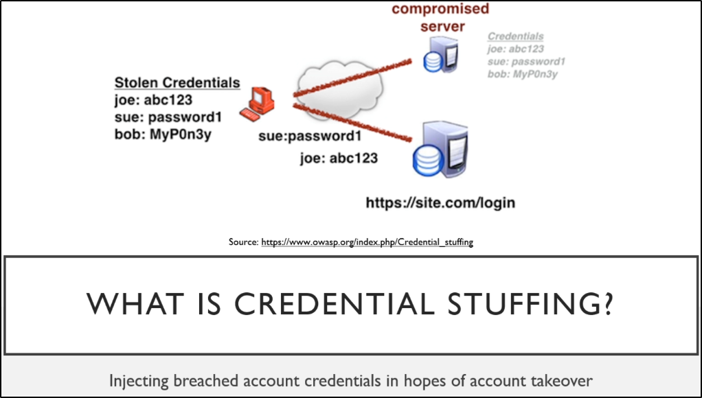
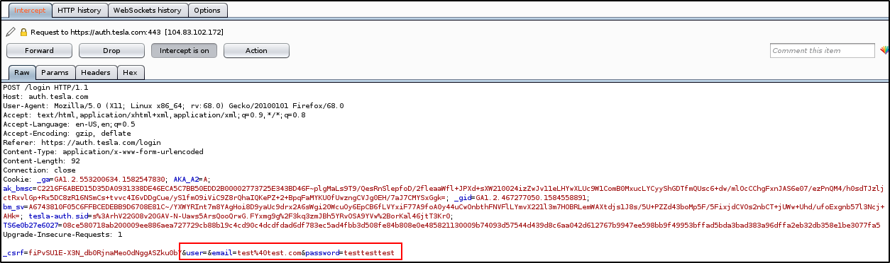

Password Spraying and Credential Stuffing
The art of gaining Breached credentials and try on another website


Let's get started with Foxy Proxy for Firefox:
https://addons.mozilla.org/en-US/firefox/addon/foxyproxy-standard/


We need to set up the options for Foxy Proxy:
We are going to add one for Burp Suite


So, everytime you want to activate the Proxy for Burp Suite, just do like this:


Disclaimer: DO NOT ATTACK TESLA, IT IS JUST FOR EDUCATIONAL PURPOSE
Disclaimer: DO NOT ATTACK TESLA, IT IS JUST FOR EDUCATIONAL PURPOSE
Disclaimer: DO NOT ATTACK TESLA, IT IS JUST FOR EDUCATIONAL PURPOSE
Disclaimer: DO NOT ATTACK TESLA, IT IS JUST FOR EDUCATIONAL PURPOSE
Noice, once you got it, let me show you an example:
Catch a login request on the login page, with Interceptor and Proxy on:




After catching a request, send it to the Intruder use the clear button:


Now, highlight the email and password (in this case test@test.com and testtesttest) and press the “add” button


Once added, should be looking like this:


Now, select the Pitchfork method:


Now, in Payload Section, we add 2 Payloads (Simple List):
One with emails (users here are for showing concept), the other one with passwords:
Payload 1 is equal to variable part of “&email” and Payload 2 is equal to variable part of “&password”


For last thing: start the attack.
BUT NOT VERSUS A TESLA WEBSITE
Once started you will see this window:
Check for change of status or a significant change in size of response


As an example, this is part of the raw response for a failed login:


We can copy the “We could not sign you in” and add to Options:
So we can see in a better way the requests that are not a valid log-in


Password Spraying
It is the art of using KNOWN USERNAMES with UNKNOWN PASSWORDS
Go back and clear the values:
Just add the USERNAME/EMAIL one with “add”


We can try some requests with changed passwords, with “Sniper” attack:


This way, just set the Payload 1 and start the attack